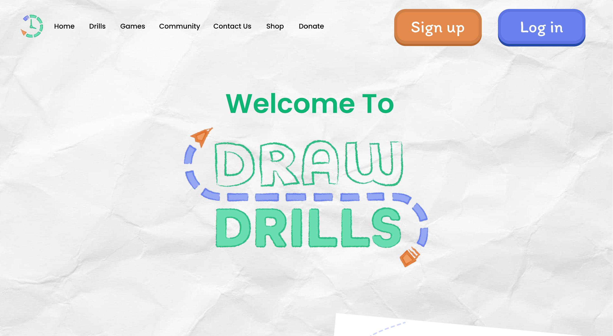

Draw Drills Redesign
DrawDrills Project: Building a Creative Tool for Artists
Project Overview
DrawDrills is a web-based application prototype designed to help artists improve their speed and creativity through structured, timed practice drills. Developed for the LIS4351 User Experience Design course, the project focused on refining the user experience by adding features like randomized prompts and community sharing, showcasing skills in user research, responsive UI design, and strategic product planning.
The Challenge
DrawDrills is envisioned as a practice tool for artists, particularly those looking to improve their speed and creative responsiveness. The assignment briefed us to augment an unfinished system into a fully functional, user-friendly tool. While artists often aim for perfection, the goal here was to develop drills that encourage quick, frequent practice, pushing artists beyond the pursuit of flawless results. My role was to refine the user experience, create new features, and structure a flexible user interface, all while ensuring the tool could accommodate different user workflows. The system’s design concept is that users can create or edit drills composed of text or images. A time limit for each prompt helps artists focus on rapid interpretation, allowing them to hone their skills progressively rather than laboring over single pieces."
The Process
As part of the assignment’s requirements, I contacted key contributors to the existing DrawDrills site, gathering insights to better understand user expectations. Additionally, I analyzed other digital art and workout applications to find a balance between functionality and an engaging, distraction-free interface. Since many artists work across multiple applications, I focused on compatibility, aiming to make DrawDrills a non-intrusive addition to any workflow.
Canva Presentation
The Solution
Describe the final result. "We built a responsive site that increased user engagement by 40%..."
- Feature 1: Interactive Quiz
- Feature 2: Video Library
Figma Prototype